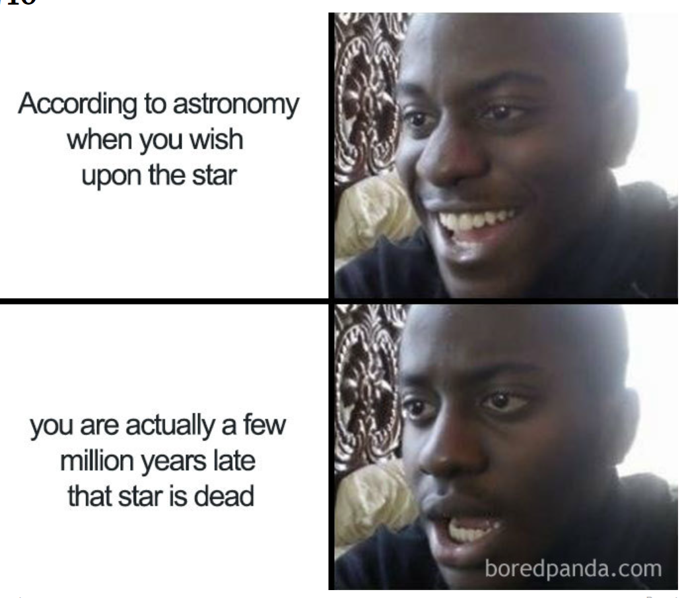

Physics jokes
Relatively slow
Einstein developed a thery about space. And boy, was it about time, too!
Is it all lies?
Why can't you trust an atom?
They make up everything.
Hide and seek
Alle the physicists meet up in heaven and decide to play a game of hide and seek. They decide that Fermi will be the seeker, so he closes his eyes and starts counting to 100.
All the physicists scatter, except for Newton, who calmly reaches into his pocket, takes out some chalk, and draws a square one metre on a side.
Fermi finishes counting and turns around, seeing Newton standing in his chalk square he yells "Ifound Newton. Newton is out!"
Newton protests: "No, I'm Newton in a meter square; I'm Pascal. Pascal is out!"
Useful conversions
| Coversion | |
|---|---|
| 1 trillion microphones | 1 megaphone |
| 10 millipedes | 1 centipede |
| 2 monograms | 1 diagram |
| 1 trillion pins | 1 terrapin |
Ways to use a barometer to find the height of a building
- Measure the height of the barometer. Scale the side of the building, measuring its height in barometer-units.
- Drop the barometer from the top of the building. Measure the time until it hits the street. Correcting for the mass/surface ratio of the instrument, use basic acceleration equation to find the height.
- Tie string to top of barometer. Lower from roof to almost ground. Swing. Period of pendulum can be used to find distance from barometer's Center of Gravity to top of building. 4.Tie string to top of barometer. Lower from roof to almost ground. Swing. Period of pendulum can be used to find distance from barometer's Center of Gravity to top of building.
pyjokes
Python supports creation of random jokes using pyjokes
Installation
To install use the following command:
pip install pyjokes
How to use
Start by importing
import pyjokes
Use the function get_joke(), which returns a single joke from a certain category in a particular language:
get_joke(language,category)
Late
